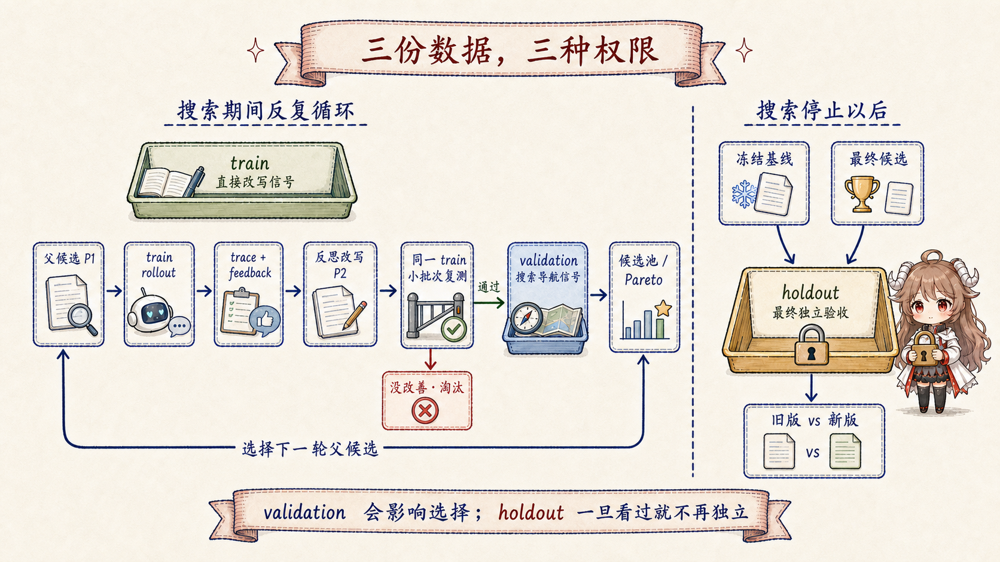

一、Skill 能被再次调用，为什么还不能说它变好了
第四篇结束时，generated-code-testing 已经写进 Skills 目录，未来会话也能发现它。现在我们想再改进这条 Skill：
让它不仅记住“先生成、再测试”，还能识别生成结果过期、错误地提交生成物、或者只跑局部测试等问题。
最直接的做法似乎是让模型把说明写得更完整，然后挑一个任务试试。新版本成功了，我们是不是就能宣布它更好？
还不能。第二次任务可能更简单，环境可能已经被上一次修好，模型也可能只是那一轮恰好选对工具。即使变化确实来自新 Skill， 它也可能只背住了刚才那个例子。要把“这次成功”变成“这个版本更可靠”，必须固定题目、固定怎样评分、固定模型与工具条件， 还要预留一组搜索过程从未见过的任务。评测数据就是这把比较尺子。
本篇先不讲 DSPy 或 GEPA 怎样改文字，只解决优化开始前的四个问题：一道题到底包含什么；题目从哪里来； train、validation、holdout 分别允许影响哪一步；当前 Hermes self-evolution 原型怎样真正读取和切分它们。 如果这四件事没有讲清，后面的“分数提高”也没有可信含义。
先给最常见疑问一个短答案。 train 会参与执行、失败反思和候选改写；validation 不直接把题目送给反思器写新文字，但它的分数会决定候选排名和下一轮从谁继续改； holdout 在搜索停止后才打开，用来比较冻结基线和最终候选。验证集会间接塑造最终 Skill，所以它不是第二份训练集，也不是完全保密的最终考试。
二、先做一次公平对比：一道评测题究竟是什么
继续用生成代码测试 Skill。我们先冻结当前 SKILL.md，称它为基线。之后无论产生多少候选，
都能回到这个相同起点。然后准备一道任务：“某个 schema 改动后，测试报告导入模块不匹配，请定位原因并验证修复。”
题目只描述用户要完成什么，不能顺手把答案提示进去。
另一边单独写评分要求：好结果必须确认生成器是否运行、检查生成文件差异、执行目标测试，并说明为什么旧生成物会造成失败。
它不是逐字标准答案，而是一份 rubric（评分说明），告诉评估器哪些行为不能漏掉。Hermes self-evolution 把这一对数据叫作
EvalExample：task_input 是给 Agent 做的题，expected_behavior 是给 metric 或裁判看的要求。
task_input
schema 变更后，测试报告导入模块不匹配；定位原因并验证修复
expected_behavior
- 检查生成代码是否过期
- 运行项目真实生成命令
- 检查生成文件差异
- 执行目标测试并解释失败原因
这两个字段必须分开。若把“检查生成代码是否过期”直接写进用户题目，Agent 只要复述题面就可能得到高分；
我们无法判断它是否真的学会在不提示的情况下想到这一检查。源码转换为 DSPy 样本时，仍把
expected_behavior 保留在 Example 上供 metric 使用，却只把 task_input 标成程序输入：
dspy.Example(
task_input=ex.task_input,
expected_behavior=ex.expected_behavior,
).with_inputs("task_input")
字段定义、JSONL 持久化和转换逻辑见
EvalExample / EvalDataset。
difficulty 与 category 用来描述覆盖面，source 记录题目从哪里来；它们不是另一套答案。
2.1 分数告诉你“多差”，执行现场告诉你“差在哪”
接着让基线 Skill 真正完成这道题。一次“某个版本在某道题上实际执行”的运行叫 rollout，执行过程叫 trace。 假设基线只重跑测试，没有执行生成器，于是仍然失败。评估器给出低分，同时留下“没有检查生成文件是否过期”这条反馈。 分数适合比较，trace、输出和文字反馈则让优化器知道应改哪条说明。
优化器据此写出候选版，例如增加“schema 或接口变化后，先确认生成步骤与生成文件差异”。候选必须在相同任务、相同模型、相同工具和相同评分下重跑。 若新旧版本使用不同装备，分数变化就不能归因于 Skill。若只比较两段文本而不真正执行任务，我们也只知道新文字看起来更完整，不知道它能否改变行为。
| 要固定的东西 | 为什么 | 变化后会混入什么解释 |
|---|---|---|
| 基线版本 | 所有候选从同一对象出发 | 不知道改动相对谁产生 |
| 任务与 rubric | 旧版、新版面对同一难度和口径 | 题更简单或评分更宽松 |
| 模型、工具、预算 | 两个版本使用同样装备 | 能力差异来自 runtime 配置 |
| 执行与 metric | 比较真实行为，而不是文字观感 | 新版只写得更长、更像答案 |
三、题目从哪里来：三种出题人，统一一种样本
一道题能解释评测单位，却不足以启动优化。候选可能只适合这一种 schema 变化，也可能只会处理测试命令。 我们需要不同难度、不同故障类型和不同表达方式的任务，而且每道题都要提前写清 rubric。 当前 self-evolution 原型支持三条来源路径：合成任务、人工金标和真实会话。
EvalExample。3.1 合成任务：先让系统有题可做
没有历史数据时，SyntheticDatasetBuilder 会把完整旧 Skill 交给一个生成模型，让它输出多组
task_input、expected_behavior、difficulty 和 category。对生成代码 Skill，它可以快速造出
schema 变化、生成文件未提交、局部测试遗漏等任务。输出解析成功后，空题目或空 rubric 会被丢弃，再随机切分。
这条路解决冷启动，却有结构性盲区：出题模型是在读旧 Skill。旧 Skill 反复强调“先跑生成器”，合成题也容易围着这句话变化；
旧 Skill 完全没想到跨平台脚本，出题模型可能一起忽略。合成数据适合快速建立第一把尺子，不适合独自证明真实使用已经改善。
生成和切分见
SyntheticDatasetBuilder.generate。
3.2 人工金标：主动覆盖旧 Skill 看不见的风险
Golden set 不是要求 Agent 输出一段固定答案，而是由人直接编写或审定任务与 rubric。它的价值在于能故意加入旧 Skill 没覆盖的高风险题， 也能把“测试通过”“差异为空”“不得修改手写文件”等条件写成可审计门槛。成本更高，但它能打破“旧 Skill 决定出题范围”的闭环。
GoldenDatasetLoader 优先读取已经分好的 train.jsonl、val.jsonl 和
holdout.jsonl；如果只有一个 golden.jsonl，当前实现会先 shuffle 再按 50/25/剩余比例切分。
已经人工分好的文件更适合处理会话家族、项目来源和难度分层，避免纯随机切分把近重复题放到不同集合。
3.3 真实会话：把用户真的会问什么带进来
第三条路读取 Claude Code、GitHub Copilot 和 Hermes Agent 的历史会话。它能带回真实措辞、真实项目压力和旧 Skill 没预见的失败， 但会话消息还不是评测样本：其中有大量无关任务，旧 assistant 回答也可能正是我们想修复的错误，不能直接当金标。 因此真实会话需要先筛选，再重新生成 rubric。
| 来源 | 任务怎样产生 | rubric 怎样产生 | 主要风险 |
|---|---|---|---|
| 合成任务 | 模型阅读旧 Skill 后生成 | 同一次生成给出 | 复制旧 Skill 的关注点和盲区 |
| 人工金标 | 人编写或选择高价值任务 | 人审定要求或可执行检查 | 成本高，覆盖取决于设计者 |
| 真实会话 | 从用户历史消息中筛选 | 相关性模型依据 Skill 与上下文生成 | 隐私、噪声和裁判偏差 |
四、真实会话为什么要经过两道筛选门
历史消息可能很多，逐条调用模型既慢又贵。RelevanceFilter 先用便宜的词法规则预筛：Skill 全名、名称中的长词，
或 Skill 开头 500 个字符里的关键词重叠。若预筛得到的候选太少，再从剩余消息中随机补一些，避免词法规则把表达不同但真正相关的任务全部漏掉。
第二道门才调用 LLM。它同时看 Skill 名称、前 800 个字符、用户消息以及最多 1000 字符的旧 assistant 回答，判断是否相关；
通过后重新生成 expected_behavior、difficulty 和 category。旧回答只是判断上下文，不是正确答案。
两阶段流程见
RelevanceFilter。
4.1 数据清洗不只是去重，还包括隐私边界
外部 importer 在构造任务前会过滤一组常见密钥、token、认证头、私钥、数据库连接串与 password/secret 赋值模式； 任务文本最长保留 2000 字符，difficulty 归一到 easy、medium、hard。这个规则能挡住明显泄漏，却不等于完整匿名化： 仓库名、客户名、内部 URL 和业务数据仍可能出现在普通文本里。真正用于共享或长期存档的数据集还需要额外脱敏与人工审阅。
Secret pattern 与字段校验见
external_importers.py。
通过筛选的三类会话样本随后汇总，再进入统一切分入口：
build_dataset_from_external。
五、train、validation、holdout 到底怎样分工
现在终于可以回答最容易混淆的问题。假设留下 20 道有效题，默认 50/25/25 比例大致得到 10 道 train、5 道 validation 和 5 道 holdout。 这里没有更新模型权重：被改的是 Skill 文字。三份数据的差别不在文件格式，而在它们允许对搜索产生多大影响。

5.1 train：让优化器看到失败现场并提出改写
搜索先从候选池选一个父版本 P1，抽取 train 小批次，实际执行任务并保存 trace、输出、分数和反馈。
反思器阅读这些训练失败，提出改写版 P2。随后 P2 在同一小批次上复测；没有改善就立即淘汰。
train 因此提供的是直接改写信号：优化器知道哪道题失败、怎样失败，并据此写出下一版文字。
5.2 validation：不亲自写文字，但决定搜索朝哪里走
通过 train 快速检查的候选会在 validation 上执行。逐题分数用于更新候选池和 Pareto 前沿，并影响下一轮选择哪个候选作为父版本。 validation 题通常不会直接进入反思器成为新 instruction 的素材，但它的表现决定谁被保留、谁继续繁衍。 所以 validation 提供的是搜索导航信号，会间接塑造最终 Skill。
这就是为什么“训练集跑出 Skill，验证集再优化 Skill”不够准确。实际是循环接力：train 产生候选，validation 选择候选，
被选中的候选又回到下一轮 train。反复查看 validation 分数并据此调整搜索，也会对 validation 过拟合。
最新 DSPy GEPA 的 compile 契约仍明确区分两者：trainset 做 reflective updates，valset 跟踪 Pareto scores；若不提供 valset，
就复用 trainset，并明确警告这会鼓励对给定任务过拟合。见
GEPA.compile。
5.3 holdout：只有搜索停止以后才允许打开
搜索选出最终候选以后，才同时让冻结基线和该候选完成 holdout 题，用相同 metric 比较平均分。 holdout 没有回流箭头：一旦你看见结果又去修改 Skill，这些题就已经参与了搜索，下一次不能再把它们当成独立证据。 需要继续改时，应把已查看任务降为开发数据，并准备新的最终留出集。
| 集合 | 什么时候打开 | 允许影响什么 | 不能做什么 |
|---|---|---|---|
| train | 每轮搜索 | rollout、反馈、反思和候选改写 | 单独证明未见任务上的泛化 |
| validation | 搜索期间反复 | 候选排名、Pareto 与下一轮父候选 | 充当最终独立验收 |
| holdout | 最终候选冻结以后 | 一次基线 vs 候选比较 | 看完分数继续改，还声称它未见 |
六、当前 Hermes 原型实际怎样切分和读取
evolve_skill.py 的一次运行会从 golden、sessiondb、synthetic 中选择一条路径，
不会自动把三类来源混在一起。sessiondb 这个名字也容易误导：当前实现会尝试汇总 Claude Code、Copilot 和 Hermes 三种会话来源，
不是只读 Hermes 的 SessionDB。
if eval_source == "golden":
dataset = GoldenDatasetLoader.load(dataset_path)
elif eval_source == "sessiondb":
dataset = build_dataset_from_external(
sources=["claude-code", "copilot", "hermes"], ...
)
elif eval_source == "synthetic":
dataset = SyntheticDatasetBuilder(config).generate(...)
trainset = dataset.to_dspy_examples("train")
valset = dataset.to_dspy_examples("val")
optimized = optimizer.compile(baseline, trainset=trainset, valset=valset)
# 搜索结束后
holdout = dataset.to_dspy_examples("holdout")
数据分支见
evolve_skill.py，
train/val 接入优化器与 holdout 最终比较见
同一执行链。
6.1 随机切分不自动等于独立
当前 synthetic、未分组 golden 和 external importer 都使用 random.shuffle 后按位置切分，没有保存随机种子，
也没有按会话 ID、项目、任务家族或近重复语义分组。来自同一会话的两种改写可能一条进 train、一条进 holdout；
候选看似没见过最终题，实际上已经见过几乎相同的答案模式。
严谨运行应先做去重和 group split：同一会话、同一 issue、同一代码片段的变体必须留在同一侧；再按 category、difficulty 和 source 检查覆盖， 并保存数据版本、生成模型、rubric 审核记录与随机种子。train/validation/holdout 是权限边界，不是三个文件名本身。
6.2 很小的数据集可能留下空 holdout
构建器对 train 和 val 各使用 max(1, ...)，剩余样本全部进入 holdout。只有 2 道题时，train 和 val 会各拿 1 道，holdout 为空；
external importer 虽提示至少 3 道才有有意义的切分，却不会强制阻止继续运行。后续 holdout 平均分用 max(1, len(scores)) 防止除零，
这能让程序不崩，却不能创造独立证据。空 holdout 的“0 分比较”不应被解释为验收完成。
七、启动优化前，先检查这把尺子
到这里，评测数据的完整链路已经清楚：来源先被清洗并归一为同一种任务记录；题目只进入被评测程序，rubric 留给 metric； train 提供直接改写信号，validation 导航候选搜索，holdout 在搜索停止后独立比较。下面这份清单比“数据一共有多少条”更重要：
- 每条
task_input是否像真实用户任务，而不是把答案写进题面？ expected_behavior是否描述可观察行为，且经过领域人员审查？- 基线与候选是否使用同一模型、工具、预算和 metric？
- 同一会话、项目或任务家族是否被整体分到同一集合？
- validation 是否只导航搜索，holdout 是否从未回流到改写？
- holdout 是否有足够样本，而不是靠防除零逻辑制造“评测已完成”的错觉？
现在我们有了题目、尺子和三种权限，但还没有说明“谁能改 Skill 的哪一段文字”。
下一篇会先讲 DSPy 如何把固定输入输出、固定程序结构、可优化 instruction 和 metric 分开，再讲 GEPA 如何利用 train trace 反思、
用 validation 维护候选前沿，以及 Hermes 当前 SkillModule 接线究竟有没有把 Skill 文本真正暴露成可优化参数。
继续阅读：DSPy、GEPA 与 Hermes Self-Evolution。